El carácter emprendedor suele asociarse a la juventud.
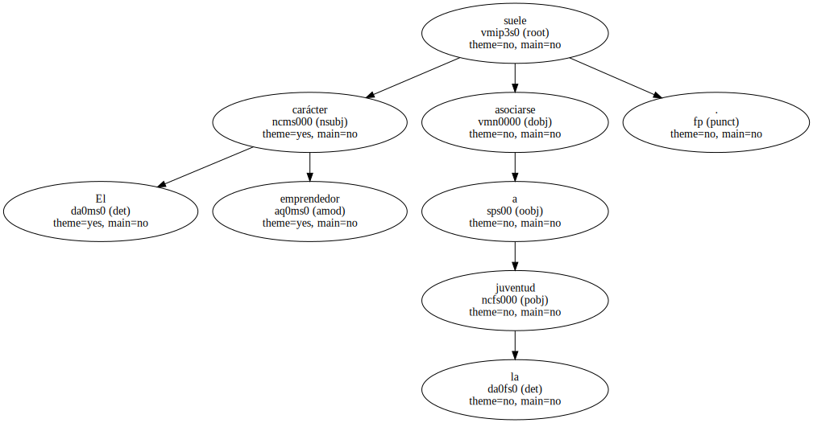A personalidades indomables , a veces individualistas , casi siempre a personas visionarias con ganas de crecer de la mano de un proyecto empresarial que es muchas veces también un proyecto vital.
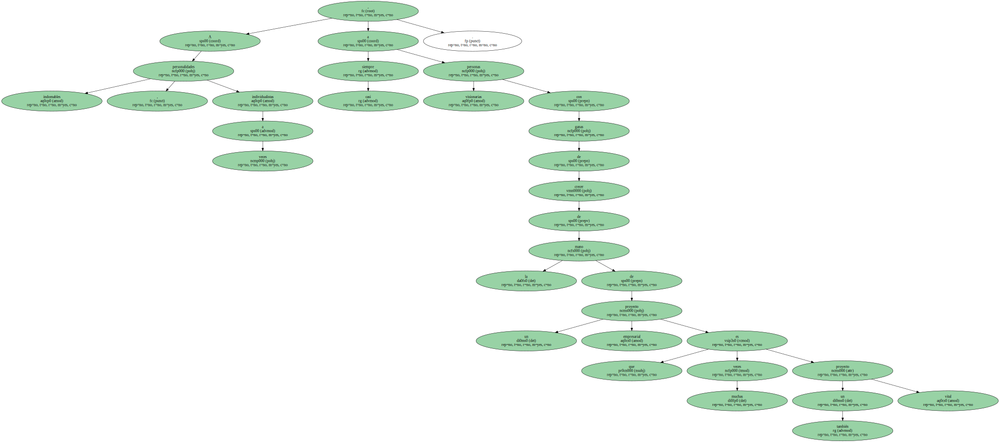Ricard Fisas es una excepción que no responde a muchos de los rasgos que conforman esa definición imperfecta de emprendedor.

A los 50 años , y con una sólida carrera profesional relacionada con las ventas a sus espaldas , vio la oportunidad de convertirse en empresario.
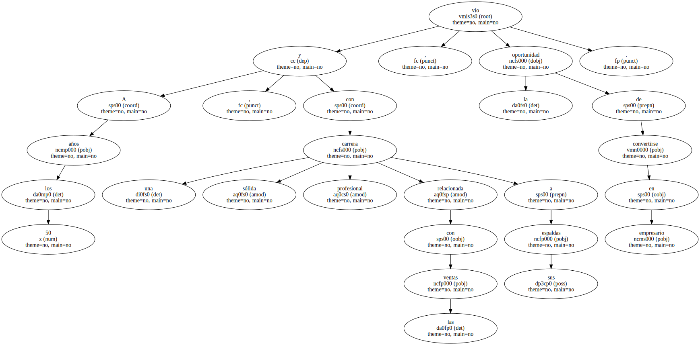Hoy , 20 años después , preside Natura Bissé , una empresa sólida con una facturación que ronda los 2.000 millones de pesetas y un marcado carácter internacional : está presente en 24 países.
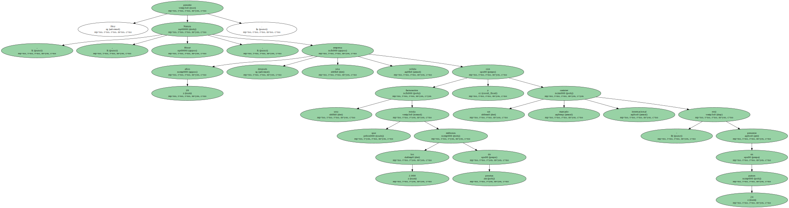" El gusanillo de crear una empresa llegó tarde , pero eso también permite saborear ahora con otra perspectiva los logros del grupo " , explica.
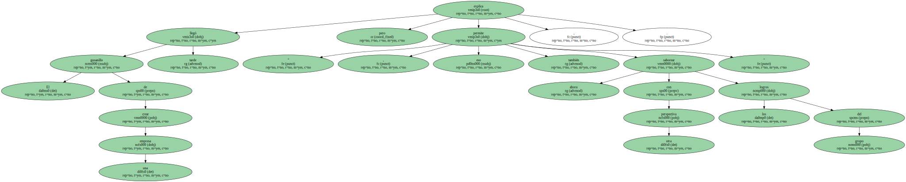A sus 72 años , Fisas posee un extenso currículo en las áreas de venta de sectores tan distintos como el alimentario o el educativo.
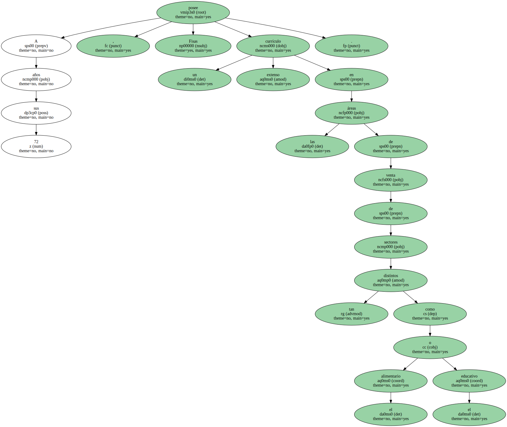A finales de los 70 acabó como director de una empresa del sector químico con intereses muy diversos : desde la cosmética a la fabricación de piensos para la industria alimentaria.
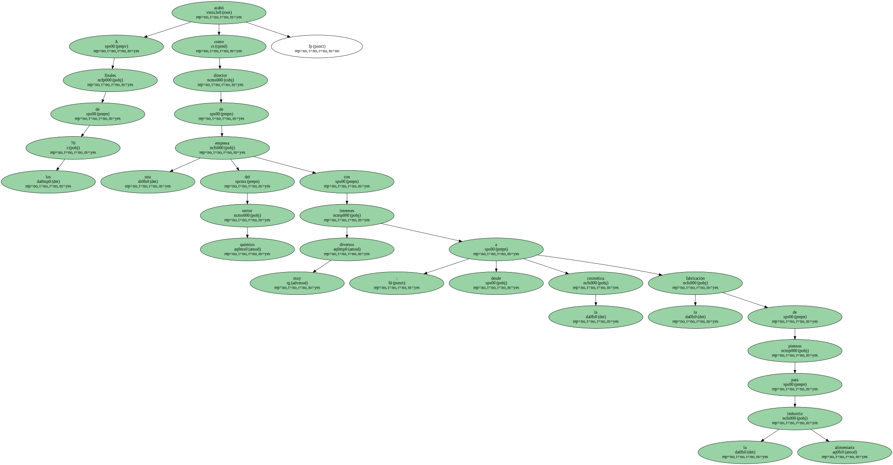" El trabajo no me satisfacía - - afirma - - , pensaba que no trabajaba en el sector adecuado ".
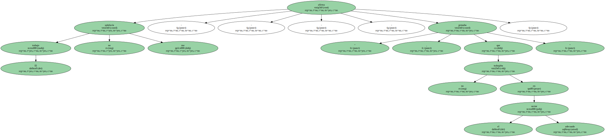Sin embargo , fue esa actividad la que le permitió convertirse en empresario.
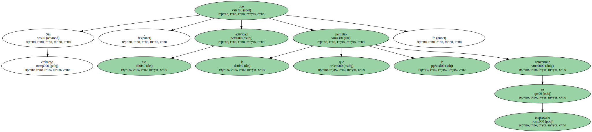" Durante las investigaciones para el desarrollo de nuevos principios activos para cosmética , dos de los colaboradores consiguieron resultados espectaculares , y decidimos poner en marcha la empresa " , explica.
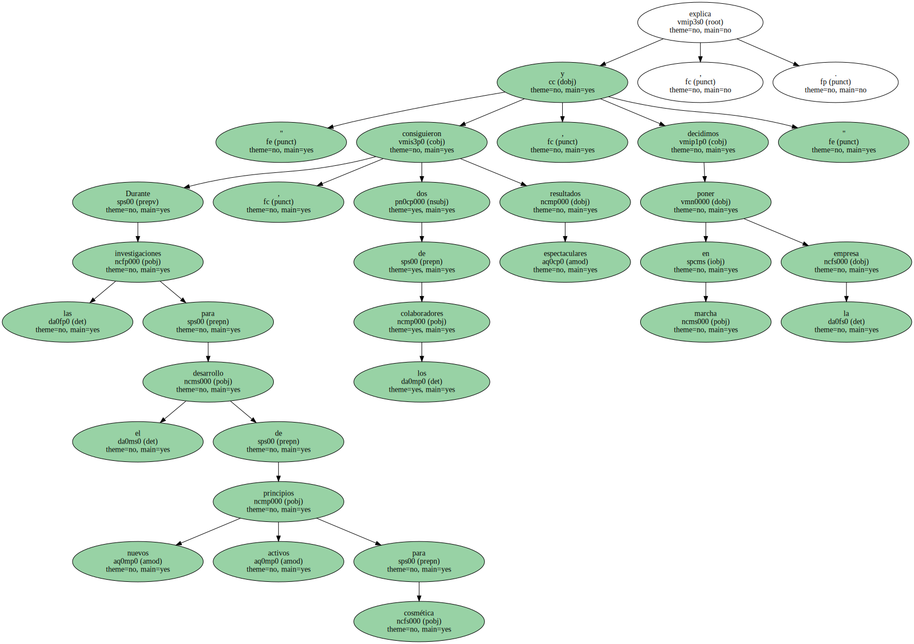En sus inicios , Natura Bissé se limitó al canal de la estética en España : la empresa tiene actualmente 6.000 puntos de venta en salones de belleza.
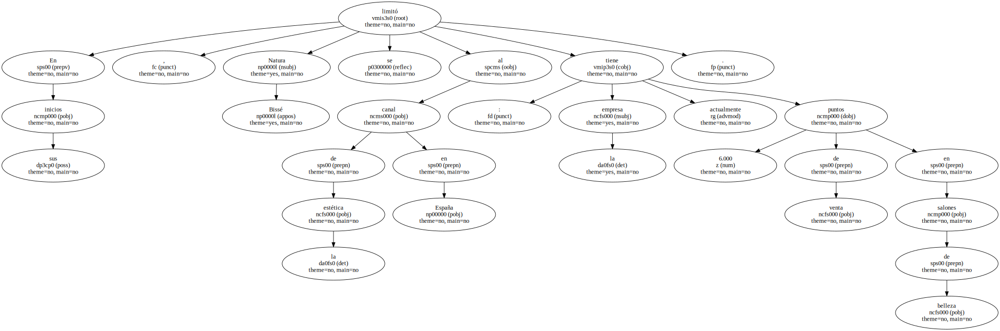El asalto a los mercados internacionales obligó a realizar un cambio definitivo para el grupo.
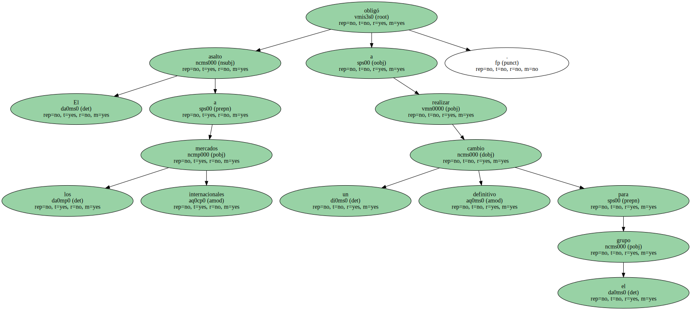Con la entrada en Estados Unidos , en 1995 , Fisas vio la necesidad de vender directamente al público y transformarse en una empresa de cosmética.
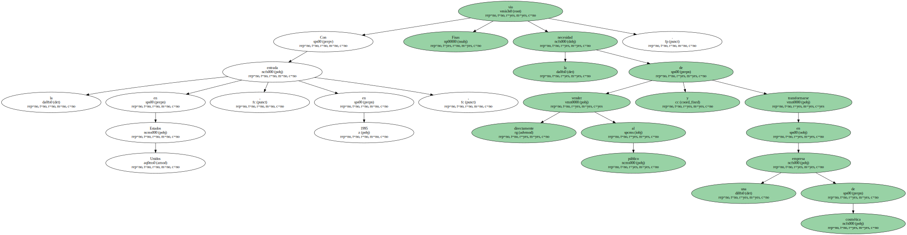" Con el tiempo , ese paso le ha dado otra personalidad a la empresa " , asegura , junto con las incorporaciones de la segunda generación en la empresa familiar.
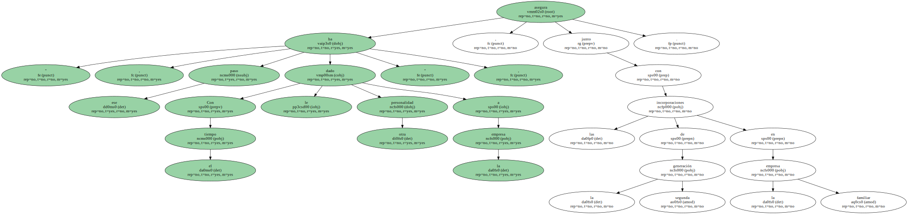Sus hijas copan la dirección de exportación - - las ventas al exterior suponen más de la mitad de la facturación - - y la gerencia.
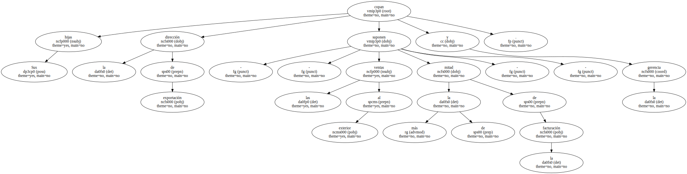Como presidente ejecutivo , Fisas considera que ha pasado a ser " el copiloto de la empresa ".
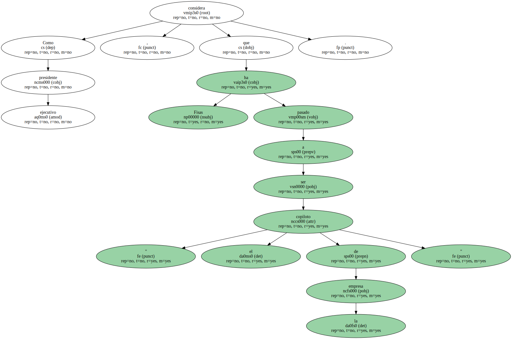" Y siguiendo con el símil , en un par de años estaré ya en la cabina de pasajeros , para dejar paso a la nueva generación ".
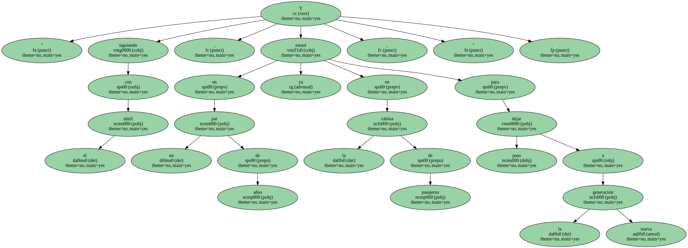El carácter familiar es algo muy presente en Natura Bissé , para lo bueno y para lo malo.

El ideario de Fisas se basa en varias premisas en las que se retratan algunas de las singularidades de la empresa familiar catalana.
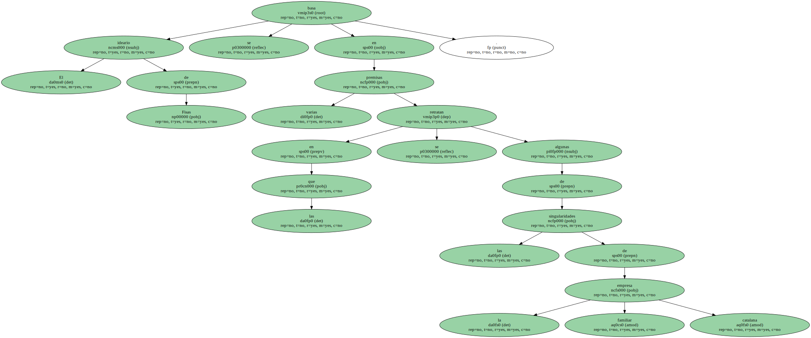" Todas las decisiones se toman por unanimidad o no se toman " , aunque eso pueda ralentizar las tareas ejecutivas.
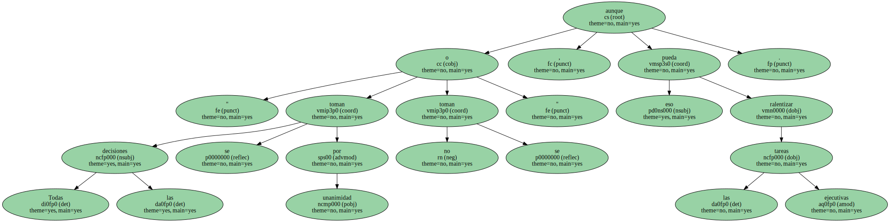Respecto a la gestión , su receta es simple : " lo bueno , repetirlo ; lo malo , corregirlo ".
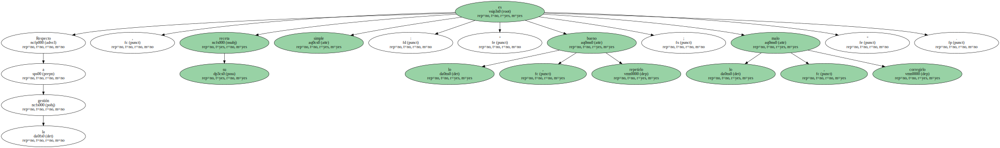Y en las decisiones de inversión , Fisas apuesta por " arriesgar , pero siempre asegurando los retornos ".
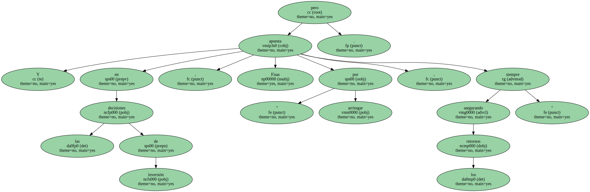Sobre su estilo de dirección , tiene claro que al empresario se le reconoce " por su capacidad para crear equipos ".
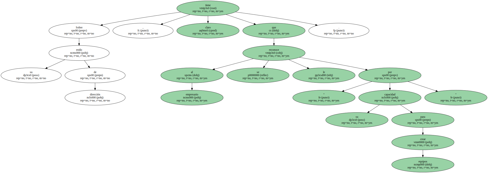Y , finalmente , en su empresa , prefiere a las mujeres en los cargos directivos : " En una compañía que vende cosméticos , no podía ser de otra forma " , apostilla.
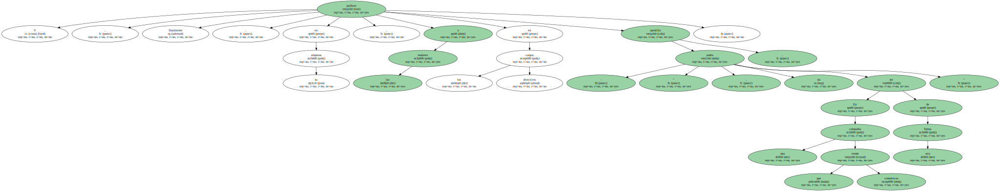